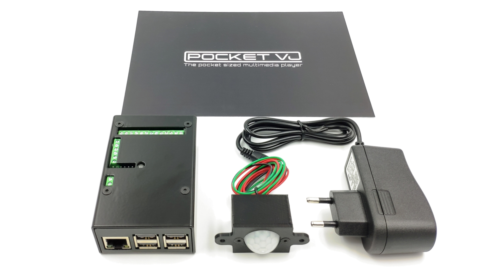

PocketVJ Exhibition User Manual¶
Version 10/2021
This user manual is published by magdesign without any warranty.
Improvements and changes to this manual necessitated by typographical errors, inaccuracies of current information, or improvements to programs and hardware may be made by magdesign at any time and without notice. Such changes will, however, be incorporated into new versions of this user manual.
Under the copyright laws, this manual may not be copied in whole or in part without the written consent of the owner.
No worries, just ask me politely :-)
If you want to watch tutorials instead: https://video.pocketvj.com/AVideo/
Content¶
Thank you for buying a PocketVJ, you are fantastic!